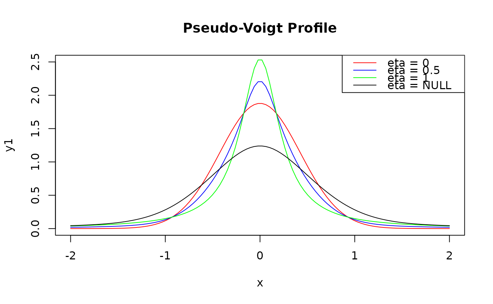

The Pseudo-Voigt function is an approximation for the Voigt function.
It is defined as a linear combination of the Gaussian and Lorentzian functions,
weighted by a mixing parameter \(\eta\) (eta) that determines the relative
contribution of each component.
Arguments
- x
A numeric vector representing the independent variable (e.g., wavelength or frequency).
- y0
A numeric value specifying the baseline offset.
- xc
A numeric value representing the center of the peak.
- wG
A numeric value specifying the Gaussian full width at half maximum (FWHM).
- wL
A numeric value specifying the Lorentzian FWHM.
- A
A numeric value representing the peak area.
- eta
A numeric value between 0 and 1, representing the mixing parameter. If
eta = NULL(default), the mixing parameter is approximated by a polynomial function ofwGandwL. This approximation (accuracy of 1%), proposed by Ida et al. (2000), provides an analytical expression for the mixing parameter based on the relative FWHM of the Gaussian and Lorentzian components. The polynomial approximation is useful when the precise value ofetais unknown.
Value
A numeric vector of the same length as x, containing the
computed pseudo-Voigt function values. If eta = NULL, the function returns
a list with the following components:
$y: A numeric vector of the same length asx, containing the computed pseudo-Voigt function values using the approximated mixing parameter.$eta: The approximate mixing parameter calculated using the polynomial approximation based on thewGandwLvalues.
Details
The Pseudo-Voigt function is given by:
$$y = y_0 + A \cdot [ \eta \cdot L(x, x_c, w_L) + (1 - \eta) \cdot G(x, x_c, w_G)]$$
where:
\(A\) is the peak area
\(y_0\) is the baseline offset
\(G(x, x_c, w_G)\) is the Gaussian component with center \(x_c\) and the full width at half maximum \(w_G\)
\(L(x, x_c, w_L)\) is the Lorentzian component with center \(x_c\) and the full width at half maximum \(w_L\)
\(\eta\) is the mixing parameter, with \(0 \leq \eta \leq 1\). The mixing parameter \(\eta\) allows the pseudo-Voigt function to describe a wide range of line shapes, from pure Gaussian (\(\eta = 0\)) to pure Lorentzian (\(\eta = 1\)), and various intermediate shapes in between.
Both \(G\) and \(L\) have unit area, so \(A\) is the area of the peak.
When eta is not given, the Thompson-Cox-Hastings approximation of the Voigt
profile is used (Ida et al. 2000): both components share the total FWHM
$$f = (w_G^5 + 2.69269 w_G^4 w_L + 2.42843 w_G^3 w_L^2 + 4.47163 w_G^2 w_L^3 + 0.07842 w_G w_L^4 + w_L^5)^{1/5}$$
and the mixing parameter is
$$\eta = 1.36603 (w_L/f) - 0.47719 (w_L/f)^2 + 0.11116 (w_L/f)^3$$
For comparison, the Olivero and Longbothum (1977) approximation, and its subsequent refinements (Belafhal 2000; Zdunkowski et al. 2007), estimate the FWHM of a Voigt line as \(w_V = \frac{1}{2} [c_1 w_L + \sqrt{c_2 w_L^2 + 4 w_G^2}]\) with \(c_1 = 1.0692\), \(c_2 = 0.86639\) (accuracy of 0.02%).
References
Zdunkowski, W., Trautmann, T., Bott, A., (2007). Radiation in the Atmosphere — A Course in Theoretical Meteorology. Cambridge University Press.
Belafhal, A., (2000). The shape of spectral lines: Widths and equivalent widths of the Voigt profile. Opt. Commun., 177(1-6):111–118.
Olivero, J., Longbothum, R., (1977). Empirical fits to the Voigt line width: A brief review. J. Quant. Spectrosc. Radiat. Transfer, 17(2):233–236.
Ida, T., Ando, M., Toraya, H., (2000). Extended pseudo-Voigt function for approximating the Voigt profile. Journal of Applied Crystallography. 33(6):1311–1316.
Examples
x <- seq(-2, 2, length.out = 100)
y1 <- pseudo_voigt_profile(x, y0 = 0, xc = 0, wG = 1, wL = 0.5, A = 2, eta = 0)
y2 <- pseudo_voigt_profile(x, y0 = 0, xc = 0, wG = 1, wL = 0.5, A = 2, eta = 0.5)
y3 <- pseudo_voigt_profile(x, y0 = 0, xc = 0, wG = 1, wL = 0.5, A = 2, eta = 1)
y4 <- pseudo_voigt_profile(x, y0 = 0, xc = 0, wG = 1, wL = 0.5, A = 2)
plot(x, y1, type = "l", col = "red", main = "Pseudo-Voigt Profile", ylim = c(0, 2.5))
lines(x, y2, col = "blue")
lines(x, y3, col = "green")
lines(x, y4$y, col = "black")
legend("topright", legend = c("eta = 0", "eta = 0.5", "eta = 1", "eta = NULL"),
col = c("red", "blue", "green", "black"), lty = 1)

# The approximated mixing parameter:
y4$eta
#> [1] 0.4647941